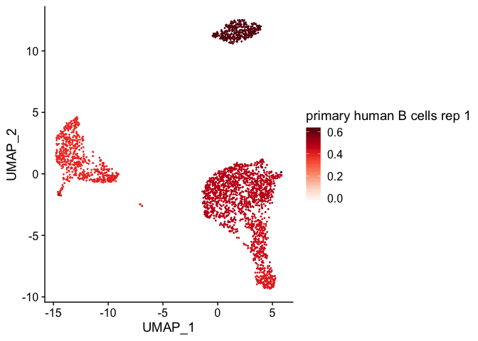
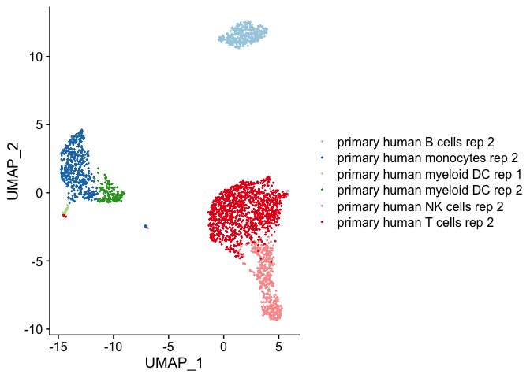

clustifyr classifies cells and clusters in single-cell RNA sequencing experiments using reference bulk RNA-seq data sets, sorted microarray expression data, single-cell gene signatures, or marker genes.
Single cell transcriptomes are difficult to annotate without extensive knowledge of the underlying biology of the system in question. Even with this knowledge, accurate identification can be challenging due to the lack of detectable expression of common marker genes. ClustifyR solves this problem by automatically annotating single cells or clusters using scRNA-seq, bulk RNA-seq data, microarray or marker gene lists. Additional functions allow for exploratory analysis of similarities between single cell RNA-seq datasets and reference data.
Example usage
In this example we use the following built-in input data:
- an expression matrix of single cell RNA-seq data (
pbmc_matrix_small) - a metadata data.frame (
pbmc_meta) - a vector of variable genes (
pbmc_vargenes)- - a matrix of bulk RNA-seq read counts (
pbmc_bulk_matrix):
We then calculate correlation coefficients and plot them on a pre-calculated tSNE projection (stored in pbmc_meta).
library(clustifyr)
res <- clustify(
input = pbmc_matrix_small,
metadata = pbmc_meta$classified,
ref_mat = pbmc_bulk_matrix,
query_genes = pbmc_vargenes
)
plot_cor(
res,
pbmc_meta,
colnames(res)[1],
cluster_col = "classified"
)
#> [[1]]

Alternatively, clustify can take a clustered seurat object (both v2 and v3) and assign identities. New reference matrix can be made directly from seurat object as well. Other scRNAseq experiment object types are supported as well.
res <- clustify(
input = s_small,
cluster_col = "res.1",
ref_mat = pbmc_bulk_matrix,
seurat_out = T,
dr = "tsne"
)
res2 <- clustify(
input = s_small3,
cluster_col = "RNA_snn_res.1",
ref_mat = pbmc_bulk_matrix,
seurat_out = T,
dr = "tsne"
)
res2
#> An object of class Seurat
#> 230 features across 80 samples within 1 assay
#> Active assay: RNA (230 features)
#> 2 dimensional reductions calculated: pca, tsne
new_ref_matrix <- seurat_ref(
s_small,
cluster_col = "res.1",
var.genes_only = FALSE
)
head(new_ref_matrix)
#> 0 1 2 3
#> MS4A1 4.517255 3.204766 0.000000 0.000000
#> CD79B 4.504191 3.549095 2.580662 0.000000
#> CD79A 4.457349 4.199849 0.000000 0.000000
#> HLA-DRA 6.211779 6.430463 3.659590 4.169965
#> TCL1A 4.394310 2.837922 0.000000 0.000000
#> HLA-DQB1 4.380289 4.325293 0.000000 1.666167Similarly, clustify_lists can also handle identity assignment of matrix or seurat object based on marker gene lists.
res <- clustify_lists(
pbmc_matrix_small,
per_cell = FALSE,
cluster_info = pbmc_meta,
cluster_col = "classified",
marker = pbmc_markers,
marker_inmatrix = FALSE,
metric = "hyper"
)
res <- clustify_lists(
s_small,
per_cell = FALSE,
marker = pbmc_markers,
marker_inmatrix = FALSE,
cluster_col = "res.1",
seurat_out = TRUE,
dr = "tsne"
)Additional reference data
More reference data (including tabula muris, immgen, etc) is available at https://github.com/rnabioco/clustifyrdata.